Aprovisionamiento y Despliegue de Laravel 11 en Linux
Procedimiento técnico paso a paso para la actualización de paquetes vía apt, instalación de PHP 8.5.4, Composer 2.9.5, configuración de variables de entorno en Zsh/Bash y ejecución del servidor Artisan verificado en Firefox.
📹 Demostración Práctica: Instalación en Linux VM
Registro audiovisual completo del aprovisionamiento por línea de comandos en terminal de Linux.
Fase 1: Actualización del Sistema e Instalación de PHP
apt update & PHP 8.5.4
En distribuciones basadas en Debian/Ubuntu (Pop!_OS), se inicia sincronizando los índices de los repositorios y desplegando el runtime de PHP con las librerías de red, manipulación de cadenas y empaquetado requeridas:
# 1. Actualización de repositorios e índices de paquetes
sudo apt update && sudo apt upgrade -y
# 2. Instalación de PHP y módulos indispensables para Laravel
sudo apt install php curl php-cli php-mbstring php-xml php-curl php-zip unzip -y
# 3. Comprobación del runtime instalado
php -v
# Salida verificada en terminal:
# PHP 8.5.4 (cli) (built: Feb 2026)
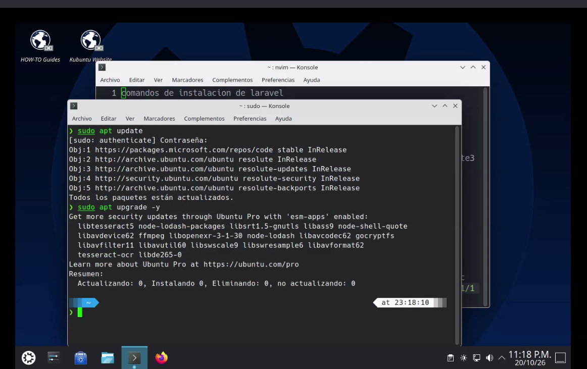
IMG01: Actualización de índices de paquetes con sudo apt update
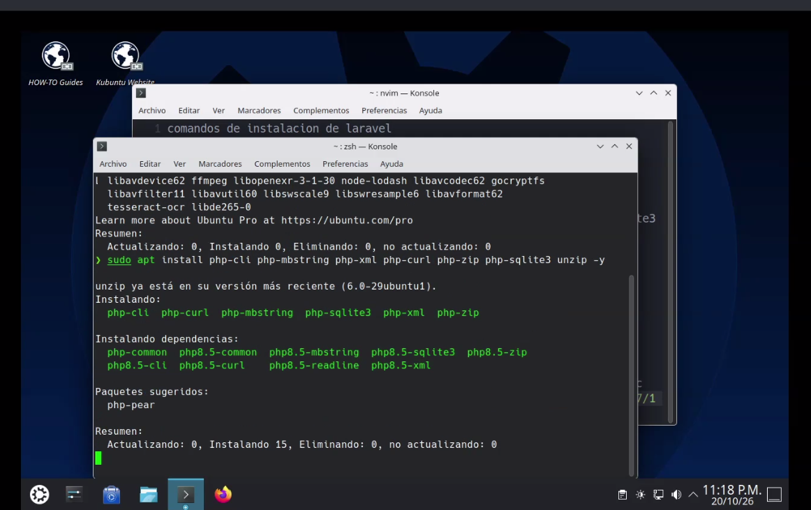
IMG02: Despliegue de PHP, curl, unzip y extensiones vía apt
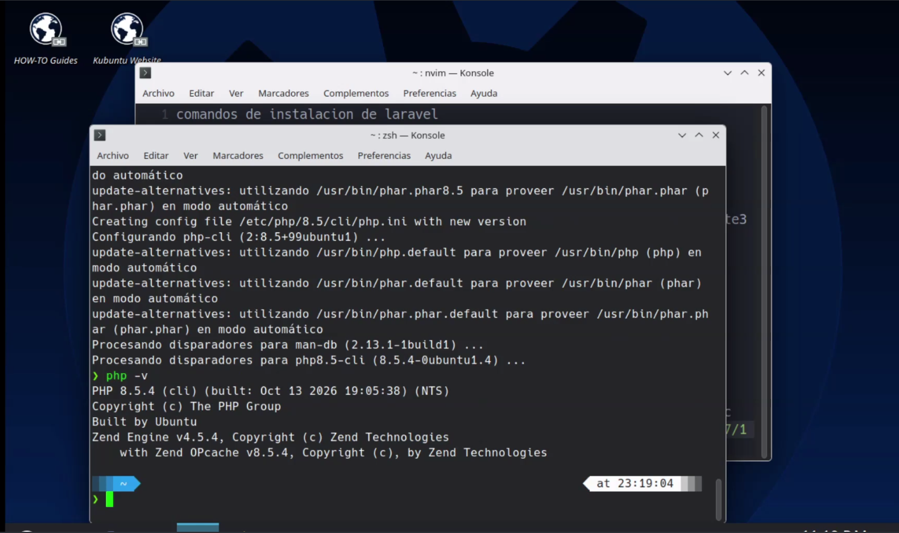
IMG03: Comprobación exitosa de versión: PHP 8.5.4
2
Fase 2: Instalación y Verificación de Composer
Composer 2.9.5
Se instala el gestor de dependencias estándar de la comunidad PHP directamente desde los repositorios del sistema operativo:
# Instalación del gestor de dependencias
sudo apt install composer -y
# Validación de versión del gestor
composer -v
# Salida verificada: Composer version 2.9.5
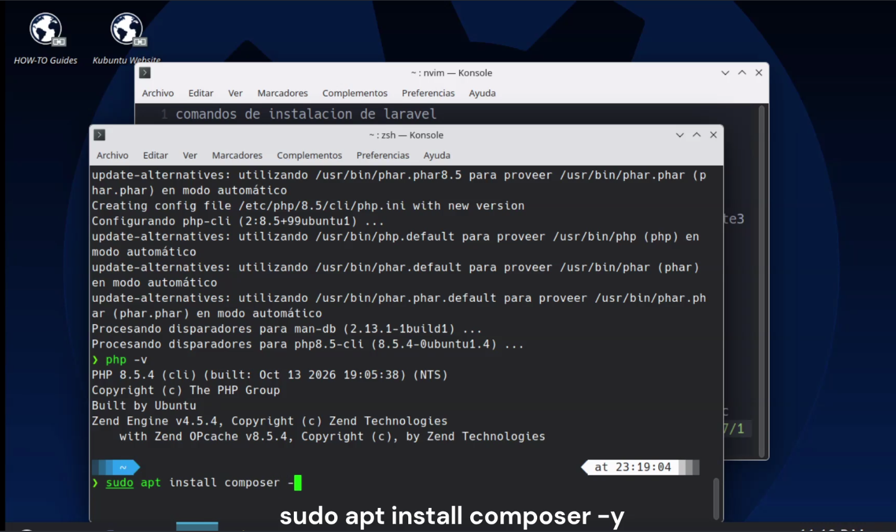
IMG04: Descarga e instalación de Composer con apt
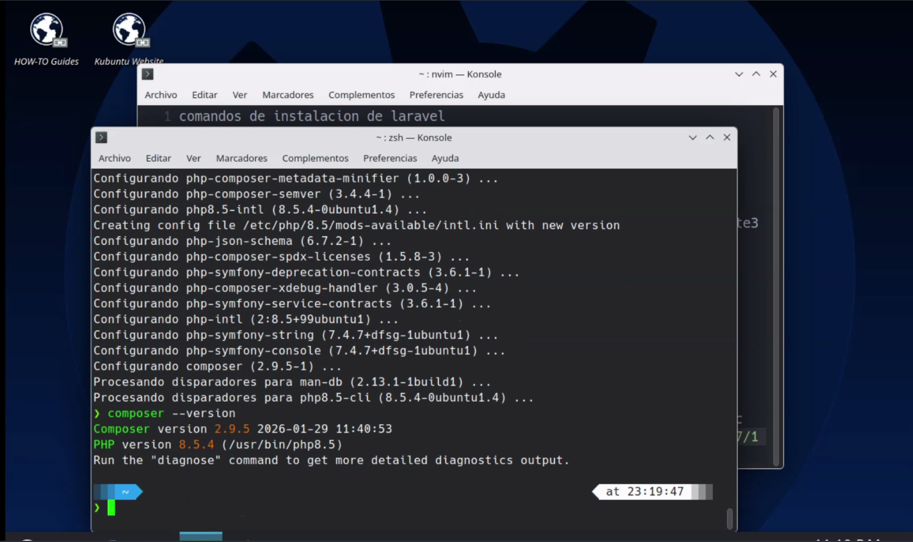
IMG05: Verificación exitosa del comando composer -v (v2.9.5)
3
Fase 3: Instalación Global de Laravel y Configuración de PATH
Laravel Installer 5.32.0 & ~/.zshrc
Se descarga el instalador de Laravel de forma global. Para que el binario sea ejecutable desde cualquier ubicación de la terminal, se inyecta su ruta en el archivo de configuración del shell (Zsh en Pop!_OS o Bash):
# 1. Instalación global del instalador de Laravel
composer global require laravel/installer
# 2. Agregar binarios globales de Composer a la variable PATH
export PATH="$HOME/.config/composer/vendor/bin:$PATH"
# 3. Guardar en el perfil de la shell y recargar
echo 'export PATH="$HOME/.config/composer/vendor/bin:$PATH"' >> ~/.zshrc
source ~/.zshrc
# 4. Validar versión del instalador
laravel --version
# Salida verificada: Laravel Installer 5.32.0
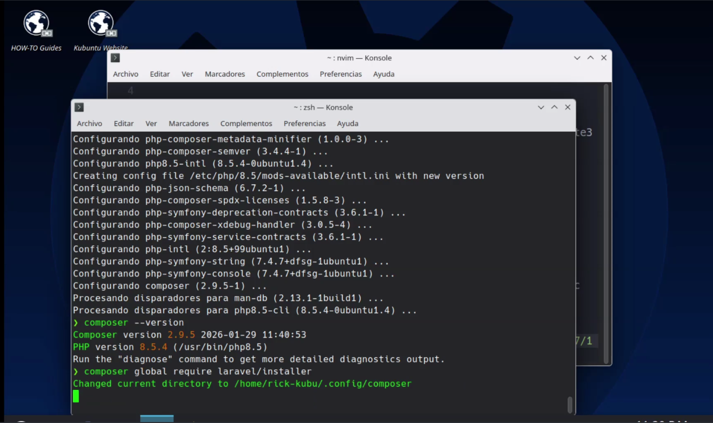
IMG06: Ejecución de composer global require laravel/installer
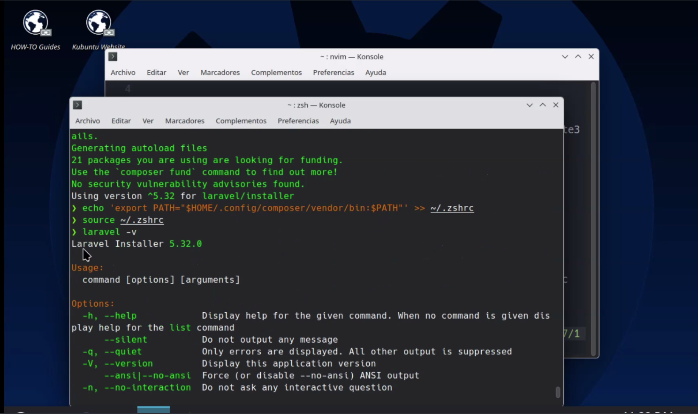
IMG07: Exportación de PATH en ~/.zshrc y comprobación de versión 5.32.0
4
Fase 4: Inicialización del Proyecto Demo y Servidor de Desarrollo
Artisan & Firefox en http://127.0.0.1:8000
Se genera la aplicación base mediante el CLI, se cambia al directorio de trabajo y se enciende el servidor web local con Artisan:
# 1. Creación de la aplicación demo
laravel new demo-laravel
# 2. Navegar al directorio generado
cd demo-laravel
# 3. Iniciar el servidor local de desarrollo
php artisan serve
# Server running on [http://127.0.0.1:8000]
# 4. Para finalizar la ejecución:
# Presionar Ctrl + C en la terminal activa
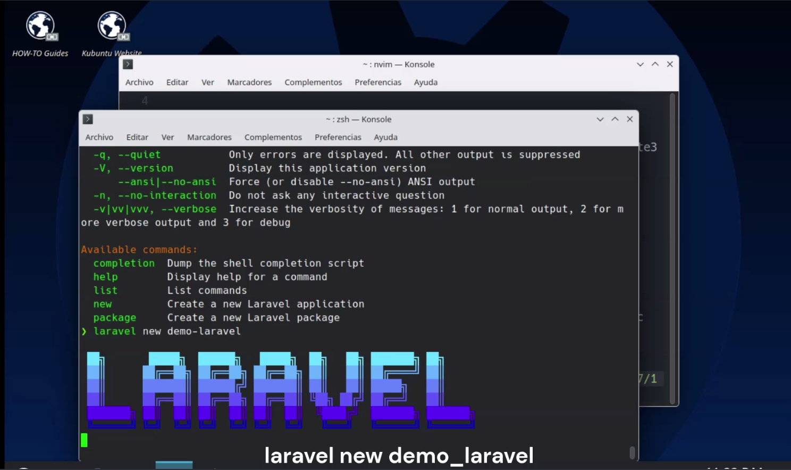
IMG10: Creación de la aplicación base con laravel new demo-laravel
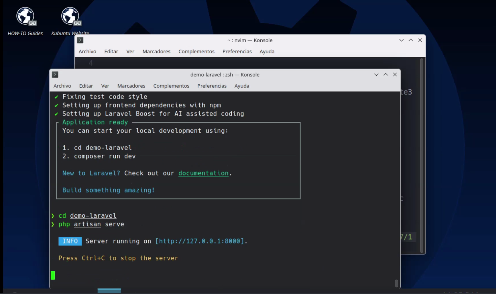
IMG12: Ejecución del comando php artisan serve en el puerto 8000
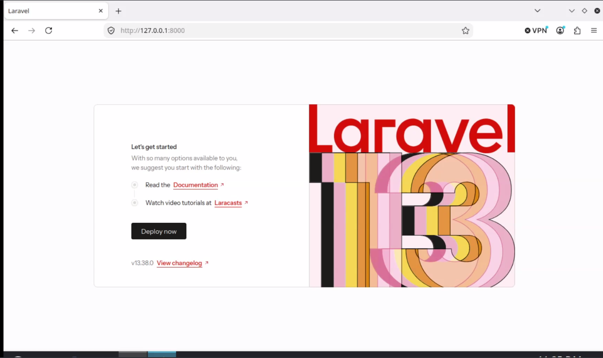
IMG13: Verificación exitosa en Firefox en http://127.0.0.1:8000
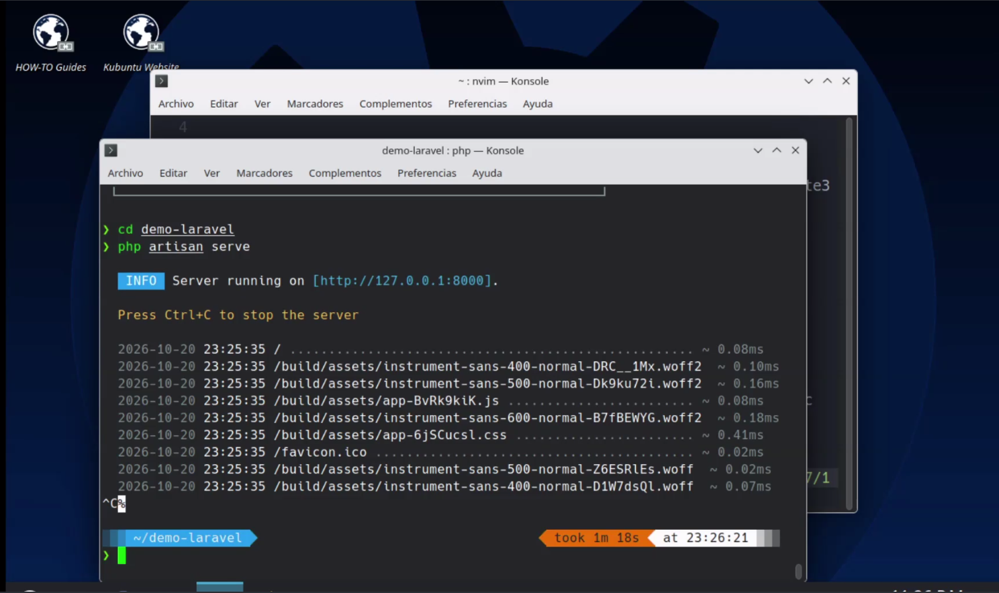
IMG14: Detención limpia del servicio de red con Ctrl + C